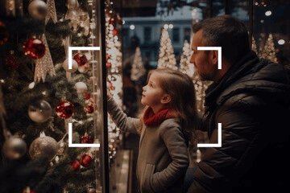
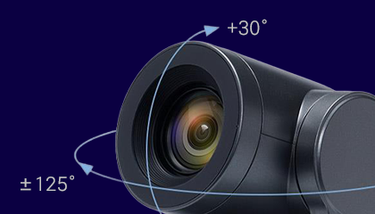
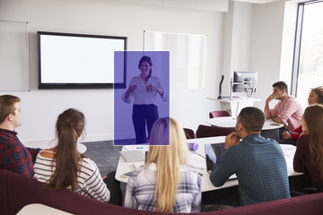
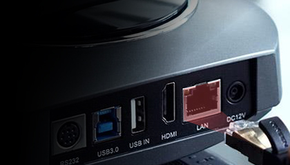
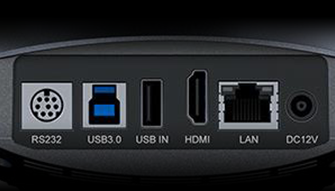
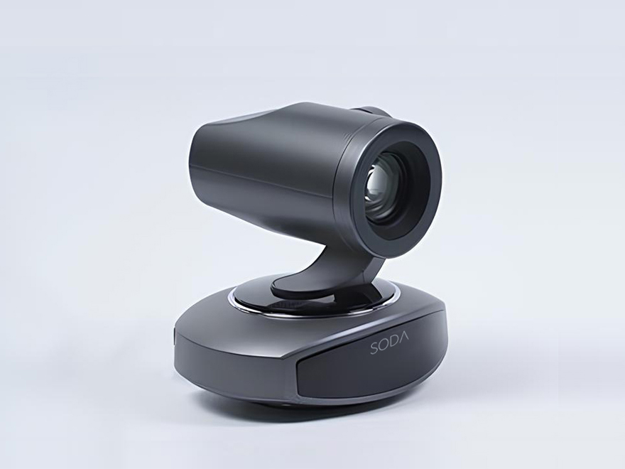
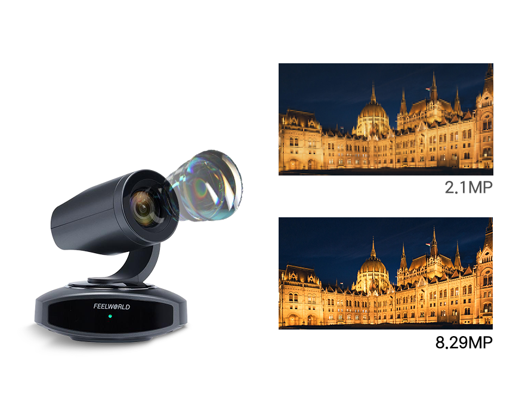
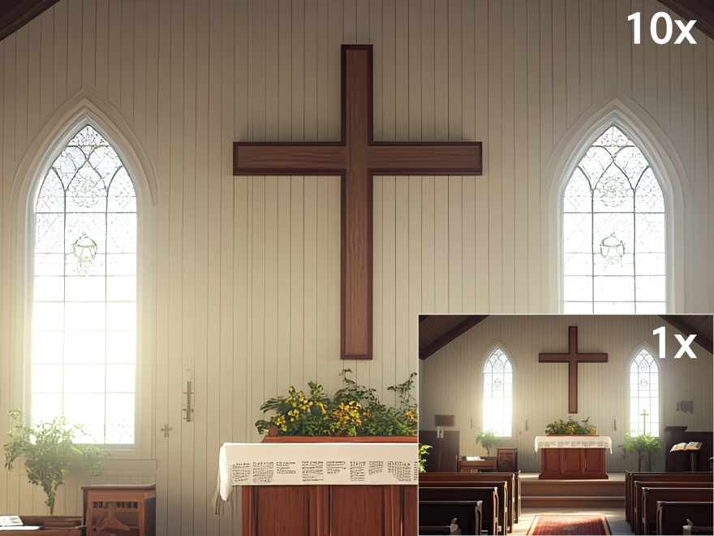
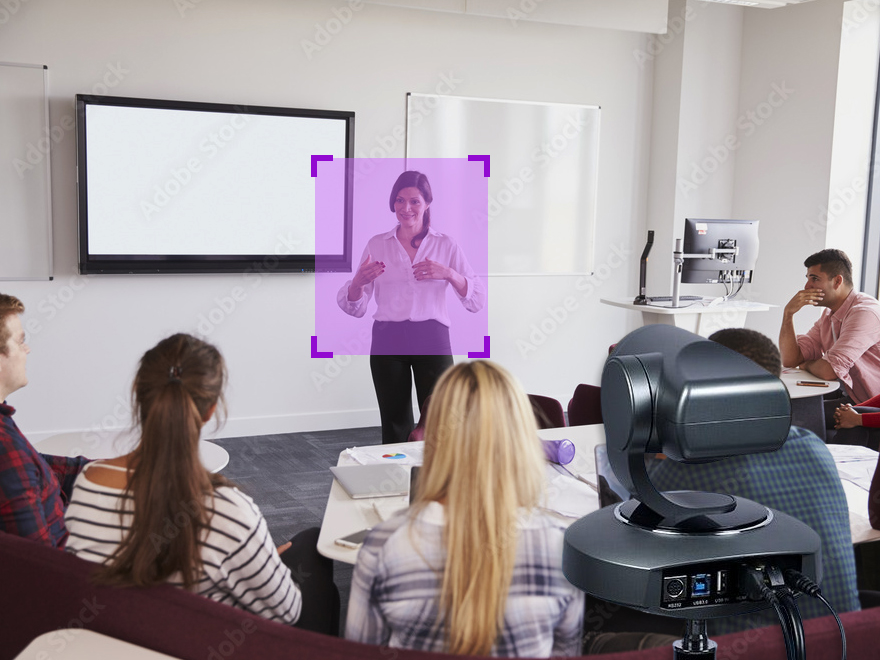

Ai-Powered 4Kㅣx10 ZoomㅣAuto Tracking
SODA 4K10
4K Ai Auto Tracking PTZ
- 4K 30fps

- 829만 유효화소

- 오토포커스
- Pan:250° Tilt:60°
- AI 추적
- 편리한 PoE
- 노이즈 억제

- 광학 10배줌

- 동시출력
4K10 PTZ
선명한 영상과 생생한 색상, 뛰어난 광학 정밀도의 4K 해상도까지 제공합니다.
4K UHD 해상도
최대 3840 x 2160 UHD 해상도에서 초당 30프레임까지 지원하며 고품질의 선명한 화질을 제공합니다.829만 유효화소
3840 x 2160 해상도의 4K 영상을 구현하는데 필요한 유효 화소 수를 의미합니다. 이 수치는 4K UHD(Ultra High Definition)를 구성하는 총 픽셀 수와 거의 동일합니다

10배 고배율, 광학 줌
광학 렌즈를 사용하여 피사체를 확대하여 촬영하는 방식으로, 디지털 줌과 달리 화질 저하 없이 고화질로 멀리 있는 대상을 촬영할 수 있는 기능입니다.
화질 저하 없이 클리어 줌인/아웃 할 있어 먼 거리에서도 선명한 화질로 보실 수 있습니다.
편리한 PoE 기능
LAN 포트로 제품의 전원을 공급하며 IP컨트롤러와 네트워크 허브를 통해 다수의 카메라를 원격 조정할 수 있습니다.
AI Auto Tracking
실시간 추적 및 영역 추적 기능을 제공하며 카메라가 자동으로 사용자를 실시간으로 추적하여 화면 중앙에 위치하도록 합니다. 리모컨에 AI 추적 버튼 기능을 지원합니다.
다양한 활용도
천장, 벽, 기둥, 트라이포드(삼각대)등 다양하게 설치가 가능합니다.FEATURES
8.29MP 고화질 SONY CMOS 센서
최대 4K@30fps, 선명하고 생생한 영상
10배 광학줌 & 67.5° 광각 렌즈
HDMI, USB3.0, IP 스트리밍 동시 출력
PoE(이더넷 전원) 지원
오토포커스, 스마트 프레임 캡처
H.265/H.264 인코딩 지원
고급 2D/3D 노이즈 억제 기술
고속·저소음 팬/틸트
다양한 제어 및 네트워크 프로토콜
실시간 AI 추적 및 영역 추적
온라인 교육, 라이브 방송, 화상회의, 원격진료 등 다양한 활용
SPECIFICATIONS
| Camera Parameters | |
|---|---|
| Model | 4K10X |
| Sensor | 1/2.8 inch high quality CMOS sensor |
| Effective Pixels | 8.29 megapixel, 16:9 |
| View Angle | H:7.6°(N) ~67.5°(W) |
| Iris | F1.76 ~ F3.0±5% |
| Digital Zoom | 16X |
| Optical Zoom | 10X |
| Minimum Illumination | 0.5Lux(F1.8, AGC ON) |
| DNR | 2D & 3D |
| White Balance | Auto Manual One-push Specified Color Temperature |
| Focus | Auto Manual One-push |
| Exposure | Auto Manual Shutter Priority Iris Priority Brightness Priority |
| Iris Mode | F1.8 ~ F11 CLOSE |
| Shutter Speed | 1/25~1/20000 |
| BLC | On Off |
| Dynamic Range | Off 1 ~ 8 |
| Video Adjustment | Brightness Contrast Saturation W&B Mode Horizontal flip vertical flip Digital Zoom Minimum Illumination |
| SNR | >50dB |
| Input/output Interface | |
| Interface | HDMI LAN(POE) USB3.0 USB2.0 RS232-IN DC12V Power Supply |
| Video Output | HDMI USB3.0 LAN(support PoE) |
| Video Compression Format | LAN: H.264, H.265 USB: MJPG, H264, YUY2, NV12 |
| Audio Compression Format | AAC |
| LAN Interface | 100M Ethernet port support POE power supply support audio and video output |
| Control Interface | RS232-IN |
| Serial Port Communication Protocols | VISCA/Pelco-D/Pelco-P Baud Rate 115200/38400/9600/4800/2400 |
| USB Communication Protocols | UVC(Video Communication Protocol) UAC(Audio Communication Protocol) |
| Network Protocol | RTSP RTMP ONVIF GB/T28181 VISCA OVER IP IP VISCA RTMPS SRT support remote upgrade remote restart remote reset |
| Power Supply | HEC3800 Power Socket(DC12V) |
| PTZ Parameters | |
| Pan Rotation | -125°~+125° |
| Tilt Rotation | -30°~+30° |
| Pan Control Speed | 0.1 ~65°/sec |
| Tilt Control Speed | 0.1~35°/sec |
| Preset Speed | Pan: 65°/sec Tilt: 35°/sec |
| Preset Number | 255 presets (10 via remote control) |
| Video Signal | |
| HDMI | 4KP30/25 1080P60/59.94/50/30/29.97/25 720P60/59.94/50 |
| LAN Main Stream | 1920x1080 1280x720 640x480@30/25/20/15/10/5 fps |
| LAN Sub-Stream | 1280x720 640x360 640x480 320x240 320x180@30/25/20/15/10/5fps |
| USB Main Stream |
최대 3840x2160 해상도 지원 YUY2/NV12: 최대 1920x1080 MJPG/H264: 최대 3840x2160 다양한 해상도 및 프레임(30/25/20/15/10/5fps) 지원 |
| USB Sub-stream |
최대 3840x2160 해상도 지원 YUY2/NV12: 최대 1920x1080 MJPG/H264: 최대 3840x2160 다양한 해상도 및 프레임(30/25/20/15/10/5fps) 지원 |
| Other Parameters | |
| Input Voltage | 12V |
| Input Current | <1.2A |
| Power Consumption | ≤13.3W |
| Stored Temperature | -10℃~+70℃ |
| Storage Humidity | 20%~95% |
| Working Temperature | -10℃~+50℃ |
| Working Humidity | 20%~80% |
| Dimension (W*H*D) | 152X155X126mm |
| Unit Weight | 0.9kg |
| Outer Carton QTY | 4pcs |
| Outer Carton Size | 515x280x490mm |
| Gross Weight | 11kg |
Dimensions
Structure Dimensions (Unit: mm)